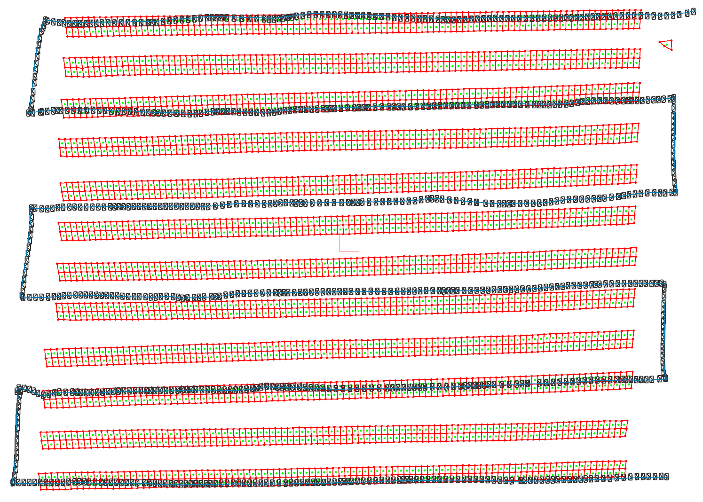

Tutorial
This tutorial will get you started with PV Hawk on an exemplary IR video dataset. It shows the general workflow of processing a PV plant. Please install PV Hawk on your machine before continuing. After finishing this tutorial, head over to Using Your Own Data to learn how to create your own dataset.
Step 1: Prepare the working directory
PV Hawk reads and writes your input data, results and intermediate data from and to the working directory, which is simply a directory on your hard drive.
Before anything else, you have to create such a working directory. Choose a suitable location on your machine and create an empty directory. In our example, we have mounted a hard drive at /storage and create a directory here with the following command
cd /storage
mkdir -p pv-hawk-tutorial/workdir
You can also choose any other location than /storage.
Step 2: Download the example dataset
Download and extract the example dataset, which covers the first twelve rows of a large-scale PV plant. The download contains a folder named splitted, which follows the required format of an input dataset for PV Hawk (see Dataset creation from videos).
Place the extracted splitted directory and its contents into the working directory. The resulting directory structure should look as follows
/storage/pv-hawk-tutorial/workdir
|-- splitted
| |-- ...
Step 3: Create a config file
Every working directory must contain a config file named config.yml. This file is your interface to the processing pipeline. Here, you configure settings of the individual pipeline steps and determine which steps to run.
Create an empty text file named config.yml in the working directory and paste the following text
---
plant_name: Example Plant
groups:
- cam_params_dir: calibration/camera_8hz/parameters/ir
clusters:
- cluster_idx: 0
frame_idx_start: 0
frame_idx_end: 2541
settings:
prepare_opensfm:
select_frames_mode: gps_visual
opensfm:
matching_gps_distance: 15
align_method: orientation_prior
align_orientation_prior: vertical
tasks:
#- split_sequences
- interpolate_gps
- segment_pv_modules
- track_pv_modules
- compute_pv_module_quadrilaterals
- prepare_opensfm
- opensfm_extract_metadata
- opensfm_detect_features
- opensfm_match_features
- opensfm_create_tracks
- opensfm_reconstruct
- triangulate_pv_modules
- refine_triangulation
- crop_pv_modules
Important for this tutorial is the tasks list, which specifies the pipeline steps to run. Steps that are commented out will not be run. In this case, the split_sequences step will be omitted because the example data is already given in the form of individual images instead of video files.
Another important field in the config is the clusters field. Each cluster corresponds to a subset of the video frames in the dataset, which is processed indepently of other clusters. This enables excluding parts of the video, e.g., when you change batteries or start/land the drone. We recommend to split long sequences to clusters of at most 5000 video frames to enhance processing speed and robustness of the pipeline. Each cluster must contain the index of its first and last frame (not inclusive) and a unique cluster_idx, which is an integer starting from 0 and incrementing by 1 for each cluster.
To aid specification of the clusters we provide a script in scripts/view_gps.py. This script plots the GPS trajectory and corresponding video frames as shown below. You can use this to obtain the frame indices for your clusters. Note, that you must run the script inside the Docker container as explained below.

In case of this tutorial there is only a single cluster starting at the first frame (frame_idx_start: 0) and ending at the last frame (frame_idx_end: 2541) of the dataset.
For an in-depth explanation of the other fields in the config file see the Config File Reference.
Note
The dataset in this tutorial is relatively small. For larger datasets it is useful to split the data into multiple parts as described in Configuring Multiple Sectors.
Step 4: Run the Docker container
Before we can begin processing our dataset with PV Hawk, we have to start the Docker container containing all runtime dependencies. Prior to that you have to disable access control of your machine’s X server by running the following command in the terminal
xhost +
This ensures that scripts running inside the container (e.g. the view_gps.py script mentioned above) can correctly execute their graphical user interfaces.
Now, open a new terminal window. Navigate to the root directory of the PV Hawk source code and start the Docker container with the command
sudo docker run -it \
--ipc=host \
--env="DISPLAY" \
--gpus=all \
-v /tmp/.X11-unix:/tmp/.X11-unix:rw \
-v "$(pwd)":/pvextractor \
-v /storage:/storage \
-p "8888:8888" \
lubo1994/pv-hawk:latest \
bash
This starts a bash shell inside the Container. From this shell you will run all forthcoming commands relating to PV Hawk.
If you encounter an error message stating “Bind for 0.0.0.0:8888 failed: port is already allocated”, simply change the port number from 8888 to another port or omit the port forwarding option (-p “8888:8888”) alltogether. Port forwarding is only needed to run jupter lab inside the container. For instance, to train the Mask R-CNN model or perform camera calibration.
The –gpus=all option enables access of the GPU for Mask R-CNN inference. If you do not have a deep learning-capable GPU you can omit this option and PV Hawk will automatically fall back to using the CPU.
The options –ipc=host, –env=”DISPLAY”, -v /tmp/.X11-unix:/tmp/.X11-unix:rw are required for graphical output of scripts running within the container. Just leave them untouched.
The -v “$(pwd)”:/pvextractor and -v /storage:/storage options map directories of your machine inside the Docker container. Mapping the /storage directory is needed to access our dataset from within the Docker container. If you placed your dataset at another location (e.g. at /home/mydata), please change the mapping accordingly (e.g. to -v /home/mydata:/home/mydata).
Note
It is important to launch the Docker container from the location of the PV Hawk source code. If you launch it from another location, the source code will not be available inside the container you will not be able to run PV Hawk.
Step 5: Run the pipeline
Now, you can process the dataset with PV Hawk. To this end, call the main Python script inside the Docker shell and provide the full path to the working directory as argument
python main.py /storage/pv-hawk-tutorial/workdir
This will run all pipeline steps specified in the config file. Note that processing the example dataset takes about two hours even on our relatively capable machine. If your machine is less performant you may have to wait even longer.
If you process your own data, it makes sense to run the pipeline in two stages. First, you run only the “interpolate_gps”, “segment_pv_modules”, “track_pv_modules”, “compute_pv_module_quadrilaterals” and “prepare_opensfm” steps and confirm the intermediate outputs are correct. Check, for instance, the preview.avi videos in the segmentation and tracking directories. If the results are satisfactory, proceed with the remaining pipeline steps. Comment out the steps you already ran, or otherwise their results are overwritten.
Step 6: Visualize results
Once the pipeline is finished you can inspect the results with the scripts/plot_reconstruction.py script, which plots reconstructed camera poses, PV modules and map points. Run it as follows inside the Docker shell
cd scripts
python plot_reconstruction.py --hide-map-points /storage/pv-hawk-tutorial/workdir
You should see an output similar to this one
If your results look correct you can open the dataset with the PV Hawk Viewer to browse your results and perform further analyses, such as defect detection.